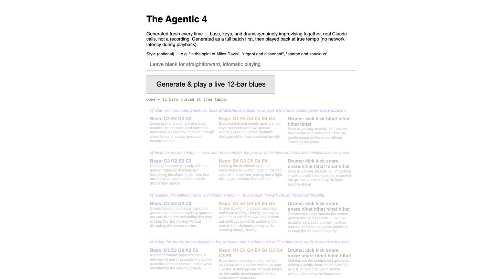
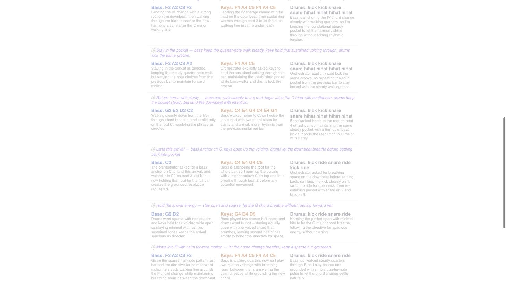

The Agentic 4
Four agents improvising live jazz, real Claude API calls per bar, real Web Audio oscillators — no samples, no pre-written music. Built to understand agents by ear, not just on paper.

Type a style, get a performance — bass, keys, drums, and a silent orchestrator conducting all three.
No research, no PRD — just a passing thought that music might be the fastest way to actually understand agents, not just read about them.
Built docs-first anyway, a deliberate correction from Opportunity Radar's own habit of writing documentation mid-build.
Three grounding docs came before a single line of audio code: a project brief, a music-theory-constraints doc, and an architecture doc.
Each instrumentalist had to clear the same three-tests bar as every other agent on this site — could you write the rule down, is a simpler tool structurally capable, would two competent people disagree given identical input.
A pattern called situated curation, picking from a bounded personal set of pre-written phrases instead of generating from scratch, got seriously considered and declined as impractical here.
The real open question was whether four agents should feel like one hive mind or four distinct voices; the answer became a shared clock and a shared per-bar directive, not a merged brain.
Oscillators came first, a single tone in tune and in time, followed by an AudioContext.currentTime-based scheduler once setTimeout drift made the beat wander.
The first real agent decision landed next — one bass note per bar, then a full chord voicing, then a live deploy to Vercel with the API key kept server-side.
Real bugs surfaced at every stage: a suspended AudioContext that needed an explicit resume, notes scheduled against stale timestamps that cut themselves off silently, and a tempo bug from double-counting API latency against the bar length.
Three instrumentalists — bass, keys, drums — plus a silent fourth agent, the orchestrator, who sets the per-bar directive the other three read but never speaks through the speakers.
Real polyphonic chords and real percussion synthesis from filtered noise and pitched sweeps, no samples anywhere in the signal chain.
A style-directive text field lets a listener type something like "12 bar blues in F# minor" and hear an actual attempt at it, generated in a batch and then played back in time.


Cut: ADSR knobs, considered early and dropped in favor of the text field alone — one honest interface instead of two half-built ones.
Cut: neural audio synthesis, name-checked and declined, so the "no samples" claim stayed literally true instead of aspirationally true.
Real gap, named and open: key and mode are still hardcoded to C major regardless of what the style directive asks for, so "moody" shapes tone and rhythm but not actual harmony yet.
A shared reference point beats telepathy — the orchestrator's one per-bar directive, not a merged brain, is what kept four independent decisions sounding like one band.
Constraints are what make judgment visible — a genre name or a key signature gives an agent something real to disagree about, the same way Fit and Close needed a real question to answer instead of open air.
The hard part was never the sound, oscillators are simple; it was building a system where each agent's judgment call was actually distinguishable from the others', not decoration on a shared script.
Live and working end to end: four agents, real Claude API calls per bar, real audio, verified in browser with the scheduler holding tempo and pitch steady across a full 12-bar performance.
Real API cost stays small, a handful of cents per performance, small enough that this stays a proof of concept rather than a case for adding a payment step.
This project replaces kevinkeiper.com's own spot on the homepage — curious how the portfolio itself came together is still answerable, just from the footer now.
- Agents & Skills
- Web Audio API
- Live Product
Try it live — a real, public deploy, same posture as every other live project here.